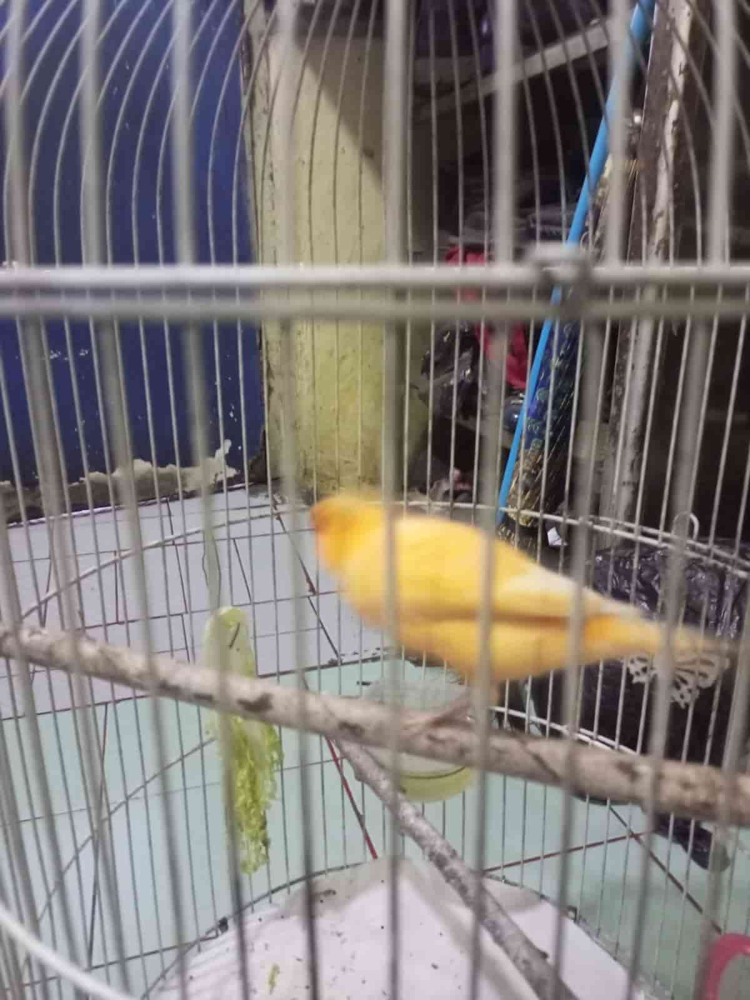

Suara kicauan burung kenari dapat berupa serangkaian tril, cicit, dan tiruan melodi yang kompleks.
Burung butut (Lonchura punctulata) dikenal dengan suara kicauan yang merdu dan bervariasi. Suara mereka sering dianggap indah dan menarik perhatian para pecinta burung.
Kicauan burung ciblek jantan biasanya terdiri dari serangkaian suara yang cepat dan berirama, dengan nada yang tajam dan jelas. Kicauannya sering kali terdengar seperti "ci-blek, ci-blek" atau "ci-lip, ci-lip". Mereka memiliki kemampuan untuk mengeluarkan variasi pola suara yang kompleks dan mengulangnya beberapa kali.
Jika Anda mencari burung peliharaan yang baik, tempat kami adalah pilihan yang tepat. Tim kami yang berpengalaman akan dengan senang hati membantu Anda menemukan burung yang sesuai dengan preferensi dan kebutuhan Anda.
Silakan jelajahi koleksi burung kami dan hubungi kami jika Anda memiliki pertanyaan atau ingin melakukan pemesanan. Terima kasih atas kunjungan Anda dan kami berharap dapat membantu Anda menemukan burung peliharaan yang sempurna.
gilangsos99@gmail.com
+6289631119809
Jl. H. Ung No.f9, RT.6/RW.3, Utan Panjang, Kec. Kemayoran, Kota Jakarta Pusat, Daerah Khusus Ibukota Jakarta 10650